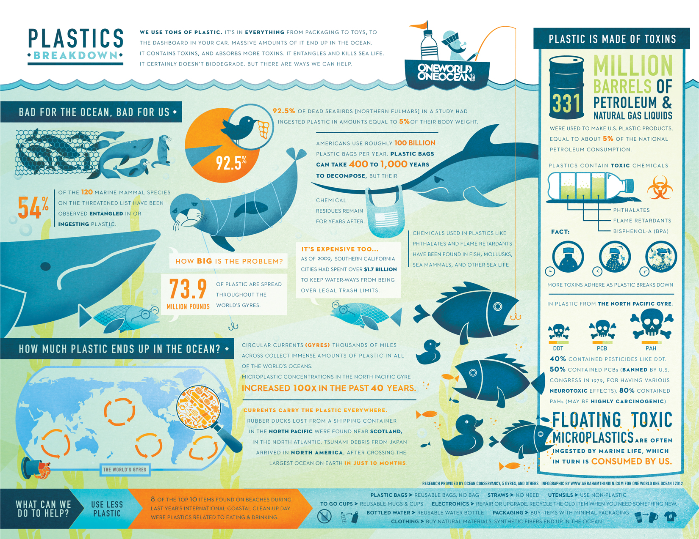
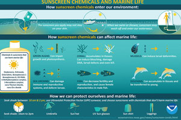

Our Ocean is Filled with Plastic
Ocean pollution poses a clear and present danger to human health and well-being, according to a new study from an international group of researchers. The study sounds the alarm that the growing global problem, which scientists are only beginning to understand, requires urgent and immediate action. It is a call to mobilize, say the authors who offer a path forward via pollution prevention and research recommendations.

Covering more than two-thirds of the planet, the oceans provide food, livelihoods, and cultural and recreational value to billions around the world. Ocean pollution, which stems primarily from human activities, threatens these many benefits. More than 80% of ocean pollution comes from land-based sources, making its way to the seas through runoff, rivers, atmospheric deposition, and direct discharges. It is most highly concentrated along the coasts of low- and middle-income countries.
“Ocean pollution is deeply unjust. Its impacts fall most heavily on low-income countries, coastal fishing communities, people on small island nations, indigenous populations, and people in the high Arctic groups that for the most part produce very little pollution themselves,” explained Landrigan. “These populations rely on the oceans for food. Their survival depends on the health of the seas.”
